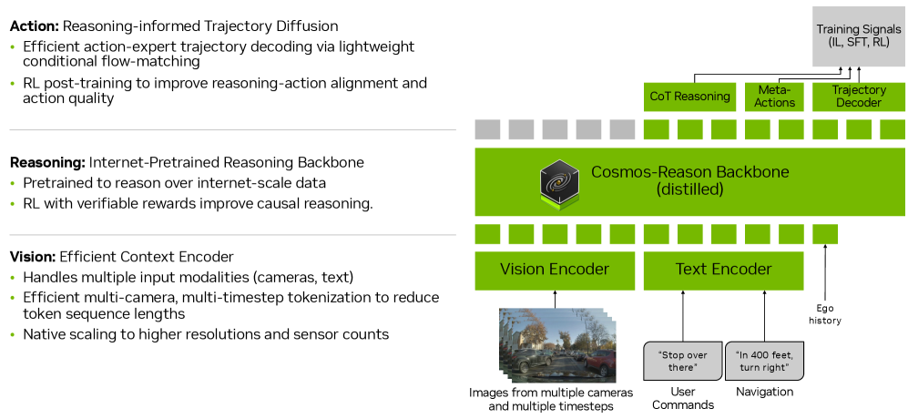
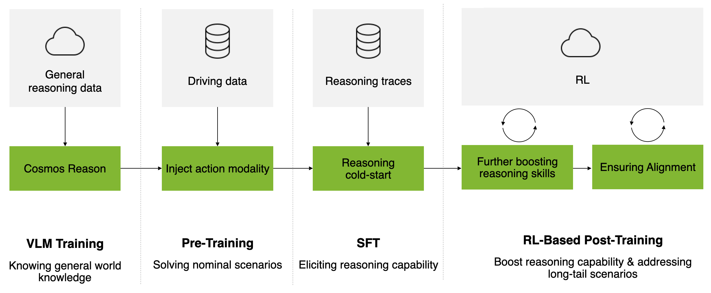
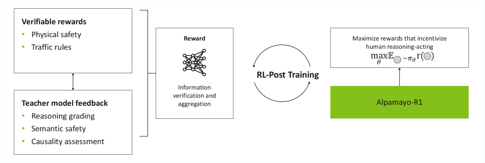
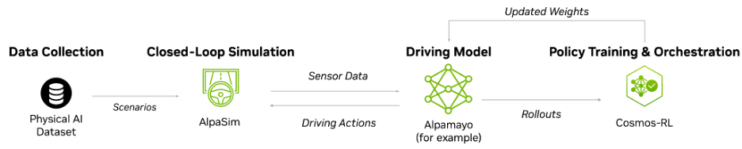

| 달라진 것 | Alpamayo 1 / 1.5 (Nano) | Alpamayo 2 Super | 근거 |
|---|---|---|---|
| 크기·백본 | 10B (백본 Cosmos-Reason/Reason2 8.2B + action expert 2.3B) | 34B 전체, 백본 Cosmos 3 Super Reasoner 32B — 약 3배 | 🔍 R1 카드 · 1.5 카드 · 보도자료 5/31 · HF 블로그 2 |
| 카메라 인지 범위 | 전방 중심 4카메라 | 360° (전·측·후방) | 🔍 R1 카드 · HF 블로그 2 |
| 출력 | 궤적 + 추론 텍스트(CoC) | + Meta-Action (yield / lane change / stop 같은 상위 판단) | 🔍 보도자료 5/31 |
| 새 용도 | 주행 모델 | + auto-labeling 모델 겸용 (2D grounding 라벨 생성, 어노테이션 "수개월→수일" 주장) | 🔍 보도자료 5/31 |
| 학습 생태계 | AlpaSim (평가용 시뮬레이터) | + AlpaGym (closed-loop RL 학습 프레임워크) + OmniDreams (시나리오 생성) | ✅ 보도자료 · GitHub alpagym · AlpaGym 블로그 |
| 타깃 | AV 연구 커뮤니티 | Level 4 robotaxi 개발, teacher → distill → 차량(DRIVE AGX Thor) 탑재 | 🔍 보도자료 5/31 |
Alpamayo = NVIDIA의 오픈 자율주행 "reasoning" 생태계. 모델 하나가 아니라 ①모델 시리즈 + ②시뮬레이터(AlpaSim) + ③RL 학습 프레임워크(AlpaGym) + ④대규모 공개 데이터셋 + ⑤auto-labeling 파이프라인 묶음. CES 2026(2026-01-05)에서 플랫폼으로 공식 발표. (🔍 CES 보도자료)
핵심 아이디어: 기존 end-to-end 자율주행 모델은 영상→궤적을 바로 뽑는다("블랙박스"). Alpamayo는 궤적을 내기 전에 "왜 그렇게 운전하는지" 텍스트로 추론 과정을 먼저 생성한다. NVIDIA는 이 추론 강제가 long-tail 상황에서 더 안전한 행동을 만들고, 안전 문서화·규제 대응에도 쓰인다고 주장. (🔍 arXiv, 📄 The Decoder)

| 용어 | 뜻 |
|---|---|
| VLA (Vision-Language-Action) | 영상+텍스트를 입력받아 "행동"(여기서는 주행 궤적)을 출력하는 모델 |
| CoC (Chain-of-Causation) | Alpamayo의 추론 텍스트 형식. "원인→결정" 인과 구조로 설계·라벨링 (🔍 arXiv) |
| Meta-Action | "차선 변경", "정지", "양보" 같은 상위 수준 주행 판단 (🔍 보도자료 5/31) |
| Cosmos-Reason / Cosmos 3 Super Reasoner | NVIDIA Physical AI용 비전-언어 백본 계열 (🔍 arXiv · HF 블로그 2) |
| Action Expert | 백본 표현을 궤적으로 바꾸는 diffusion 디코더 (1/1.5에서 2.3B) (🔍 R1 카드) |
| Open-loop / Closed-loop | open-loop = 녹화 데이터 1회 예측·채점. closed-loop = 시뮬레이터와 상호작용하며 자기 행동의 결과를 겪음 (📄 AlpaGym 블로그) |
| AlpaSim | 오픈소스 end-to-end AV 시뮬레이터. NuRec 재구성 씬, 마이크로서비스 구조 (✅ developer blog · 솔루션 페이지) |
| AlpaGym | AlpaSim(환경) + Cosmos-RL(분산 학습)로 closed-loop RL post-training. GRPO 기본 (✅ GitHub · 블로그) |
| Nano / Super | 공식 크기 표기. 10B = "1 Nano", "1.5 Nano" / 34B = "2 Super" (🔍 보도자료 · 솔루션 페이지) |
| Distillation | teacher 능력을 작은 모델로 압축 — 차량 탑재(DRIVE AGX Thor) 경로 (🔍 보도자료) |
| 시점 | 이벤트 | 근거 |
|---|---|---|
| 2025-10-30 | arXiv 논문 v1 "Alpamayo-R1..." 제출 | 🔍 arXiv |
| 2025-12-01 | NeurIPS 2025에서 DRIVE Alpamayo-R1 오픈 공개("세계 최초 오픈 reasoning VLA for AV" 주장) + AlpaSim 공개 | 📄 NeurIPS 블로그 |
| 2025-12-03 | HF 가중치 nvidia/Alpamayo-R1-10B 릴리스 | 🔍 R1 카드 |
| 2026-01-05 | CES 2026: Alpamayo 플랫폼 발표. Alpamayo-R1 → Alpamayo 1 개명. Physical AI AV Dataset(1,727시간) 공개 | ✅ CES 보도자료 · R1 카드 · GitHub |
| 2026-01-07 | arXiv v2 (개명 반영) | 📄 arXiv v2 |
| 2026-03-19 | Alpamayo 1.5 HF 릴리스 (코드 repo 분리) | 🔍 1.5 카드 · GitHub |
| 2026-05-19 | NVlabs/alpagym repo 생성 (GitHub API) | 📄 GitHub alpagym |
| 2026-05-21 | COMPUTEX 2026 Best Choice Awards — Vehicle Technology & Smart Cockpit 부문 수상 | 📄 GTC 뉴스 블로그 |
| 2026-05-31 | GTC Taipei 키노트: Alpamayo 2 Super 발표 + AlpaGym·OmniDreams | 🔍 보도자료 · 📄 GTC 뉴스 |
| 2026-06-01 | Pavone HF 블로그(Alpamayo 2) + AlpaGym how-to 게시. AlpaGym 코드 공개는 이 무렵 라이브스트림 중 | 🔍 HF 블로그 2 · 📄 AlpaGym 블로그 · 🎥 라이브스트림 |
| 2026-06 (CVPR) | 공개 챌린지 2종: AlpaSim Closed-Loop E2E / Physical AI AV Reasoning | 📄 AlpaGym 블로그 |
| 2026 여름 (예정) | 2 Super 가중치·코드 공개 예정 — 2026-07-15 현재 미공개 확인 | 🔍 보도자료 · HF 검색 직접 확인 |
| 항목 | Alpamayo 1 (= Alpamayo-R1) | Alpamayo 1.5 | Alpamayo 2 Super |
|---|---|---|---|
| 발표 | NeurIPS 2025 (R1) → CES 2026 개명 (📄 NeurIPS 블로그, 🔍 R1 카드) | 2026-03-19 HF 릴리스 (🔍 1.5 카드) | 2026-05-31 GTC Taipei (🔍 보도자료) |
| 파라미터 | 10B = 백본 8.2B + action expert 2.3B (🔍 R1 카드) | 10B 동일 구성 (🔍 1.5 카드) | 34B (🔍 보도자료) / 백본 32B (🔍 HF 블로그) — §9.1 |
| 백본 | Cosmos-Reason (🔍 arXiv) | Cosmos-Reason2 (🔍 1.5 카드) | Cosmos 3 Super Reasoner (🔍 HF 블로그) |
| 카메라 입력 | 4개 고정(front-wide/front-tele/cross-left/cross-right), 10Hz 0.4s 히스토리 (🔍 R1 카드) | 4개 기본 + flexible camera counts (🔍 1.5 카드) | 360° 전·측·후방, 개수 미명시 — 영상에선 "7+" (🔍 HF 블로그, 🎥 영상) |
| 그 외 입력 | egomotion만, navigation 없음 (🔍 GitHub) | + navigation guidance(텍스트), 사용자 질문 (🔍 1.5 카드) | navigation 포함(플랫폼 설명) (✅ 솔루션 페이지) |
| 출력 | CoC 추론 + 6.4s 궤적(64 waypoints @10Hz) (🔍 R1 카드) | + VQA 답변 (🔍 1.5 카드) | + Meta-Action + 2D grounding 라벨 (🔍 보도자료) |
| 학습 | CoC 데이터셋 → SFT → RL(GRPO). 공개 가중치는 RL 미적용 (🔍 arXiv · GitHub) | RL post-trained 공개 (🔍 1.5 카드) | + closed-loop RL(AlpaGym) (✅ 보도자료 · GitHub) |
| 학습 데이터 | 80,000시간, CoC 700K (🔍 R1 카드) | 80,000시간(10억+ 이미지), CoC 3M (🔍 1.5 카드) | 미공개 |
| 벤치마크 | AlpaSim 0.73±0.01, minADE_6@6.4s 1.22m (🔍 R1 카드). 논문: +12% planning, -35% close encounter, 실차 99ms (🔍 arXiv) | AlpaSim 0.81±0.01, minADE 1.11m, LingoQA Lingo-Judge 74.2 (🔍 1.5 카드) | 수치 미공개 (🔍 HF 블로그) |
| 공개 상태 | 가중치+코드 공개(gated, ~22GB) (📄 GitHub) | 가중치+코드 공개 (🔍 1.5 카드) | 미공개, 여름 예정 (🔍 보도자료) |
| 라이선스 | 가중치 non-commercial / 코드 Apache 2.0 (🔍 R1 카드) | 동일 구조 (🔍 1.5 카드) | 미발표 (📄 CES 보도자료: "상업 옵션" 예고) |
| 추론 GPU | ≥24GB VRAM (🔍 GitHub) | 동급 10B · AlpaGym 학습 ≥40GB GPU 2장 (📄 블로그) | 미공개 |
| 코드 | NVlabs/alpamayo | NVlabs/alpamayo1.5 · recipes | 미공개 (예정: GitHub+HF) |
정리: 1 → 1.5는 같은 10B 틀의 기능 확장(RL 공개, navigation/VQA/유연 카메라, CoC 4배). 1.5 → 2 Super는 크기(3배)·인지(360°)·출력(meta-action)·용도(auto-labeler)·학습(closed-loop RL)이 함께 바뀌는 세대 전환.



| 주체 | 내용 | 근거 |
|---|---|---|
| PlusAI (자율 트럭) | Alpamayo foundation model을 대형 트럭용으로 적응 중. "10-billion-parameter reasoning VLA ... trained using reinforcement learning against safety constraints and traffic rules" + teacher→student distill로 500M 엣지 모델. DRIVE Hyperion(HW)·Halos(안전) 3축 결합. 협력: Scania·MAN·International(TRATON), Hyundai, Iveco 등 | 🔍 PlusAI 2026-03-16 |
| 관심 표명 (CES) | Lucid, JLR, Uber, Berkeley DeepDrive | 📄 CES 보도자료 |
| Mercedes CLA 탑재설 | 기사 403으로 Alpamayo 명시 여부 확인 불가 — NVIDIA DRIVE 풀스택 보도와 혼동 가능성. 인용 보류 | ❌ aibusiness |
배포 전략: 연구용 10B 오픈(1/1.5) → 챌린지·리더보드로 생태계 형성 → 34B teacher(2 Super) + closed-loop RL 도구 → 파트너가 distill해 자사 차량/칩(DRIVE AGX Thor) 탑재. PlusAI(10B teacher → 500M student)가 이 경로의 첫 공개 실증. (🔍 PlusAI · 보도자료)
| 모델 | 개발사 | 공개 여부 | 기반/구조 | 출력 | 비고 |
|---|---|---|---|---|---|
| Alpamayo 1/1.5/2 Super | NVIDIA | 가중치+코드+시뮬+데이터셋 오픈 (2 Super 예정) | Cosmos-Reason 계열 + diffusion action expert | 궤적 + CoC (+meta-action, VQA) | "세계 최초 오픈 reasoning VLA for AV"는 NVIDIA 주장 (📄 NeurIPS 블로그) |
| EMMA | Waymo | 비공개 (논문만) | Google Gemini 파인튜닝 | planner 궤적, perception 객체, road graph | 한계 자인: 장시간 영상 제약, LiDAR/radar 미활용 (🔍 Waymo 블로그 2024-10) |
| LINGO-2 | Wayve | 비공개 | 비전 모델 + 자기회귀 언어 모델 (VLAM) | 궤적 + 설명 텍스트/VQA | "최초 closed-loop 공도 테스트 VLAM" 주장, 2024-04 (🔍 Wayve 블로그) |
| MindVLA | Li Auto (理想) | 비공개 (양산 지향) | 자체 LLM(MoE+Sparse Attention) + 3D 공간 인코더 + diffusion 궤적 디코더 | 액션 토큰→궤적, 음성 지시 대응 | GTC 2025(2025-03) 공개, Li i8부터 양산 적용 계획 (🔍 CnEVPost) |
| OpenEMMA | 학술(TAMU 주도) | 오픈 (Apache-2.0) | GPT-4o/LLaVA/Llama-3.2-V/Qwen2-VL 위 EMMA 재현 | 경로 예측 + 판단 근거 | EMMA 비공개에 대한 커뮤니티 대응 (🔍 GitHub, arXiv 2412.15208) |
| OpenDriveVLA | 학술 (AAAI 2026) | 오픈 (Apache-2.0, 0.5B) | 오픈 LLM + 2D/3D instance-aware 표현 | 언어 조건 주행 액션 | 소형·학술 규모 (🔍 GitHub, 📄 AAAI) |
| AutoVLA | 학술 | 논문 공개 | adaptive reasoning + RL fine-tuning | 궤적+추론 | Alpamayo adaptive thinking과 같은 문제의식 (📄 arXiv 2506.13757 — 제목·초록 수준만 확인) |
포지셔닝(위 표 기반 판단): 폐쇄 진영(EMMA·LINGO-2·MindVLA)은 자사 차량/서비스용, 방법만 공개. 오픈 학술 진영(OpenEMMA·OpenDriveVLA·AutoVLA)은 재현 가능하나 소규모. Alpamayo는 유일하게 "산업 규모 모델(10B→34B) + 전용 시뮬레이터 + closed-loop RL + 1,727시간 데이터셋 + 리더보드"를 한 묶음으로 오픈. 단 가중치는 non-commercial — "오픈소스"보다 "오픈 웨이트"에 가깝고 상용은 별도 라이선스. (🔍 R1 카드)
논문 기준: ① CoC 데이터셋 — hybrid auto-labeling + human-in-the-loop ② Stage 1 Action Modality Injection(궤적 토큰+flow matching action expert) → Stage 2 SFT(reasoning 유도) → Stage 3 GRPO 기반 RL ③ RL 효과: reasoning quality +45%, reasoning-action consistency +37%. (🔍 arXiv, 📄 arXiv v2 본문) — 그림은 §5.5.
이 보고서는 §2 용어표만으로 따라올 수 있게 썼지만, "왜 그게 되는지"까지 이해하려면 아래 개념이 바탕. 볼드 3개만 읽어도 본문 이해엔 충분.
| # | 개념 | 한 줄 설명 | Alpamayo에서의 역할 | 대표 참고자료 |
|---|---|---|---|---|
| 1 | 딥러닝/신경망 | 데이터에서 패턴을 스스로 학습하는 함수 근사기 | 모든 것의 토대 | 입문은 강의: 3Blue1Brown Neural Networks |
| 2 | Transformer | 토큰 열 처리의 표준 아키텍처. LLM의 뼈대 | 백본(Cosmos-Reason)의 기본 구조 | "Attention Is All You Need" (arXiv 1706.03762) |
| 3 | LLM + Chain-of-Thought | 답 전에 중간 추론을 텍스트로 생성시키면 성능↑ | CoC의 원형 — 주행용 인과 구조로 변형 | CoT Prompting (arXiv 2201.11903) |
| 4 | VLM (비전-언어) | 이미지·텍스트를 같은 표현 공간에서 처리 | 카메라 영상 ↔ 언어 추론 연결층 | CLIP (arXiv 2103.00020) |
| 5 | VLA (비전-언어-행동) | VLM에 "행동 출력"을 붙인 것 — 로보틱스 유래 | Alpamayo의 정체. 로봇 팔 대신 주행 궤적 출력 | RT-2, Google DeepMind (arXiv 2307.15818) — VLA 용어 정착 |
| 6 | End-to-End 자율주행 | perception→planning 모듈 분리 대신 센서→행동 한 모델 | Alpamayo가 속한 패러다임 (+추론 텍스트가 차별점) | UniAD (arXiv 2212.10156) — CVPR 2023 best paper |
| 7 | Diffusion 모델 | 노이즈에서 점진적으로 출력 복원하는 생성 모델 | Action Expert가 diffusion 기반 궤적 생성 | DDPM (arXiv 2006.11239) — "여러 후보 궤적을 자연스럽게 뽑는 생성기"로 이해해도 충분 |
| 8 | RL 후처리 + GRPO | 보상 신호로 출력을 다듬는 후반 학습. GRPO는 LLM용 RL | Stage 3·AlpaGym 핵심 알고리즘 | InstructGPT (arXiv 2203.02155) · DeepSeekMath — GRPO 제안 (arXiv 2402.03300) |
| 9 | Knowledge Distillation | 큰 teacher 출력을 작은 student가 모방 | 34B Super → 차량용 소형(예: PlusAI 500M) | Hinton et al. (arXiv 1503.02531) |
| 10 | World Model / Cosmos | 물리 세계 전개를 예측·생성하는 기반 모델 | 백본 계열 출신. OmniDreams도 이 계열 | 🔍 Cosmos WFM Platform (arXiv 2501.03575) · 🔍 Cosmos-Reason1 (arXiv 2503.15558) — 제목 직접 확인 |
(두 편 모두 검색으로 존재 확인, 본문 미검토 — §7 비교표를 깊게 팔 때 출발점)
참고: #2·3·4·5·7·8·9는 분야 표준 논문(고전)이라 arXiv ID 안정적. Cosmos 2편(#10)은 2026-07-15 제목 직접 확인 🔍. 서베이 2편은 존재만 확인.
| 소스 | 표기 |
|---|---|
| 🔍 공식 보도자료 5/31 | 34B (본문 2회) |
| 🔍 공식 HF 블로그 6/1 | 백본 32B (Cosmos 3 Super Reasoner), 전체 수치 미명시 |
| ✅ 공식 솔루션 페이지 | "scales to 32 B with Alpamayo 2 Super" |
| 📄 The Decoder, 🎥 라이브스트림 | 32B |
| 항목 | 상태 |
|---|---|
| "LingoQA 1위" (1.5) | 🎥 영상 발언만. 문서 확인은 Lingo-Judge 74.2뿐 (🔍 1.5 카드). 리더보드 미확인 |
| "7+ 카메라" (2 Super) | 🎥 영상 발언만. 공식 문서는 "360°"만. 단 데이터셋 카드가 카메라 7개 구성(전방 광각/망원, 크로스 L/R, 후방 L/R, 후방 망원) 명시(🔍 2026-07-15) — 발언과 정합. 모델 입력 스펙 문서는 미공개 |
| Mercedes CLA에 Alpamayo 탑재 | 기사 403 — 원문 확인 불가, 미채택. NVIDIA DRIVE 풀스택 보도와 구분 필요 |
| 카메라 외 센서(LiDAR 등) 입력 | 1/1.5는 카메라+egomotion만 (🔍 모델카드). 2 Super 상세 미공개. 데이터셋 자체는 LiDAR 1기·radar 최대 10기 포함(🔍 카드) |
| 2 Super 벤치마크 | 미공개. "state-of-the-art" 주장만 |
| 2 Super 라이선스 | 미발표. CES 시점 "상업 옵션" 예고 (📄 CES 보도자료) |
| "Alpamayo 2" vs "2 Super" | 공식 문서엔 모델명 "2 Super"만. 영상에선 "2 = 2 Super + AlpaGym" 구성 설명 🎥 |
| off-road/close-encounter 세부 | arXiv 초록 "close encounter -35%" vs Research 페이지 "off-road -35%, close encounter -25%" — 논문 본문 표로 확정 필요 |
| 다운로드 "400,000회" | 공식 2개 소스 일치 — 자체 집계 |
| z-lab = UCSD 연결 | 🎥 영상 "UCSD 최적화" 발언 + HF z-lab 모델 존재 확인. 동일 주체 문서 근거 없음 |
| 라이브스트림 날짜 | 페이지 확인 불가. 내용상 2026-06 추정 |
전체 발췌·검증 상태: reference/references.md · 원시 기록: deep_research_claims_raw.json · 이미지 출처는 각 그림 캡션